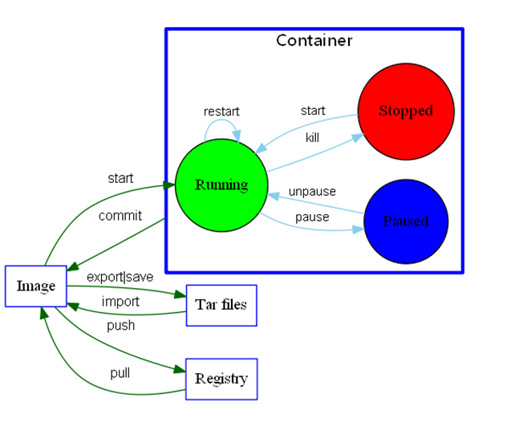

关于docker使用的一些基本命令
镜像、容器、仓库的概念区分

docker用户组加入当前用户
1
2
3
4
5
6
7
8
|
sudo groupadd docker
sudo gpasswd -a $USER docker
newgrp docker
docker ps
|
docker镜像源
打开/etc/docker/daemon.json，添加如下信息
1
2
3
| {
"registry-mirrors": ["https://docker.mirrors.ustc.edu.cn"]
}
|
基本命令
1
2
3
4
5
6
7
8
9
10
11
12
13
14
15
16
17
18
19
20
21
22
23
24
25
26
27
28
29
30
31
32
| # -i 交互式; -t 在新容器内指定一个终端
docker run -i -t ubuntu /bin/bash
# 在交互式中，查看系统版本，都可以
cat /proc/version
cat /etc/lsb-release
uname -a
# 退出容器
exit
# 显示所有的容器
docker ps -a
# 查看容器的标准输出，2b1b7a428627是容器的ID号
docker logs 2b1b7a428627
# 拉取镜像到本地
docker pull centos
# 停止容器
docker stop 2b1b7a428627
# 启动已经停止的容器
docker start 2b1b7a428627
docker restart 2b1b7a428627
# -d 是从后台运行容器
docker run -itd --name ubuntu-test ubuntu /bin/bash
# 进入放在后台的容器，当使用exit退出的时候，不会停止容器的运行
docker exec -it 2b1b7a428627 /bin/bash
# 导出容器
docker export 2b1b7a428627 > ubuntu.tar
# 导入容器
cat ubuntu.tar | docker import - ubuntu:v1
docker import http://example.com/exampleimage.tgz imagerepo
# 显示本地镜像
docker images
# 删除容器
docker rm -f 2b1b7a428627
|